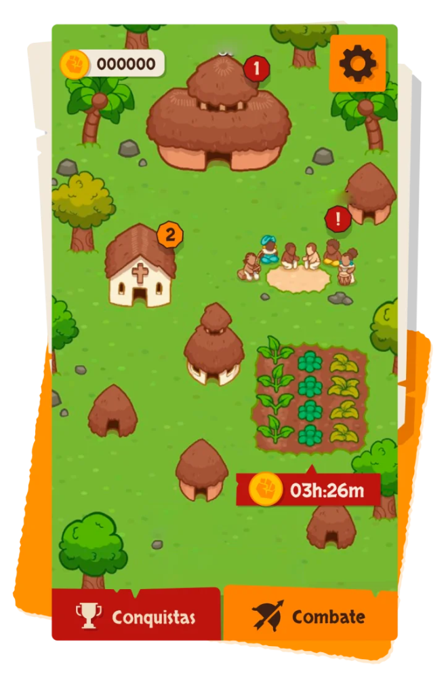
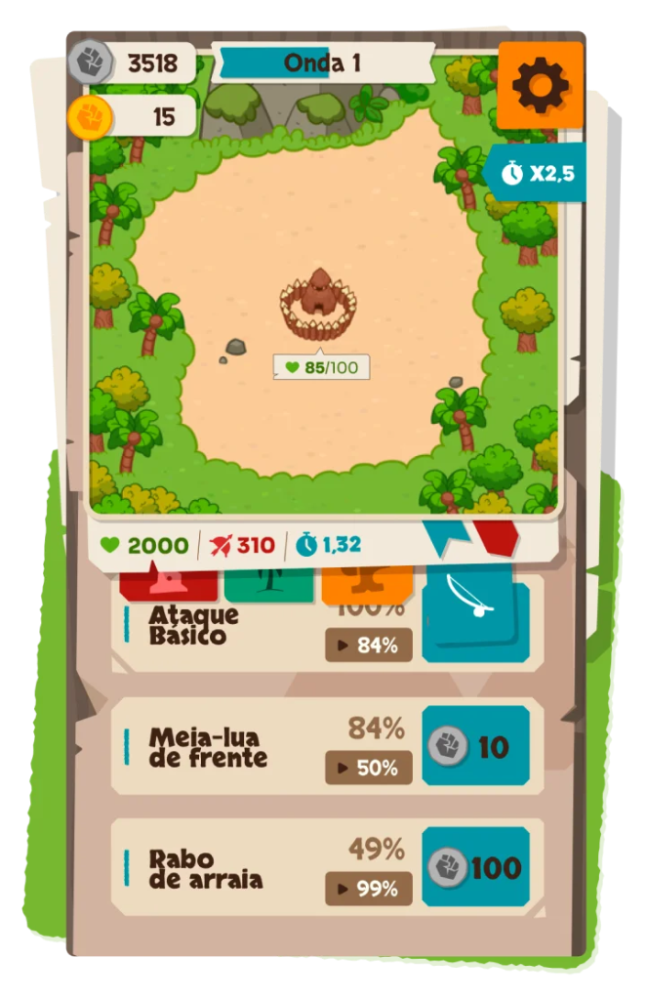
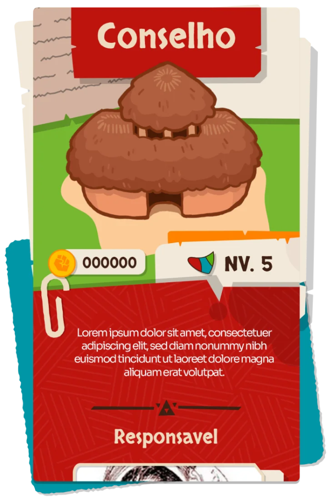

Refúgio do Banzé é um jogo mobile 2D de Tower Defense (defesa de torre) com viés educacional, ambientado na época da colonização do Brasil. O objetivo central é defender o seu Mocambo contra os ataques dos invasores europeus. Para isso, o jogador precisa progredir pelos níveis, acumular recursos e fortalecer suas defesas construindo e aprimorando instalações. A cada nova conquista, o jogador enfrenta novos desafios e desbloqueia conteúdos históricos reais sobre esse importante momento do Brasil.
Este projeto marcou meu primeiro contato prático com metodologias ágeis estruturadas, como a utilização do Git Flow e a participação em processos rigorosos de code review. Além do imenso aprendizado técnico e da imersão em boas práticas de versionamento em equipe, foi uma experiência riquíssima e gratificante poder contribuir para o desenvolvimento de um jogo com um propósito educacional voltado para a rica história do Brasil.